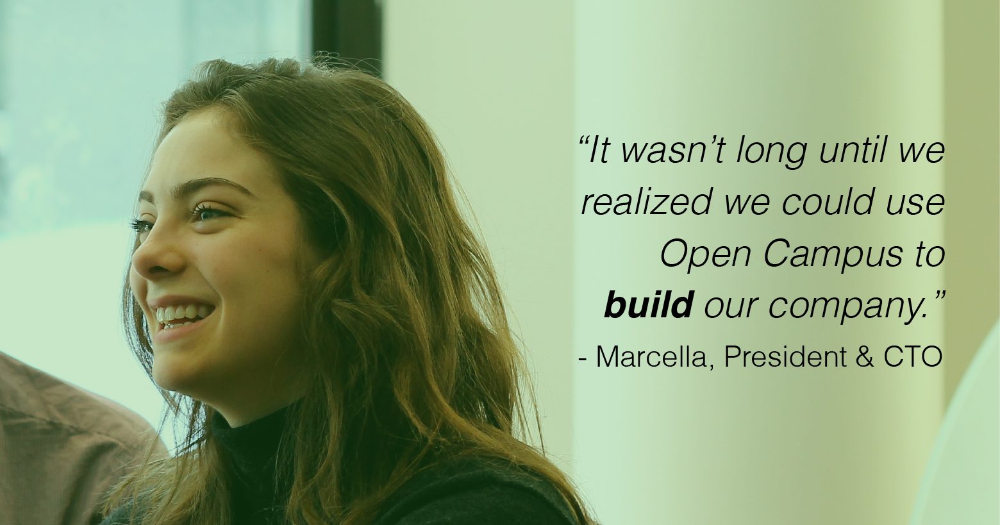

Made by Students for Students
In the fall of 2013, Ezra Levy, a business major, approached Marcella Jewell, a political and computer science student, with graphic and web design skill. He proposed the idea to create a place where students, businesses, and professors alike could pinpoint students they needed to complete projects.
Ezra had been working with a nonprofit company where he found himself constantly in search of creative, local talent to make marketing materials. At the time, he was based in Saratoga Springs, New York, a region with several thousand gifted college students. But there was no way to reach these students and put their skillsets to use without some kind of pre-existing social or professional connection.

Together, Ezra and Marcella founded Open Campus, a web platform that matches students to freelance work based on skill, timeframe, and location. Marcella and Ezra spent the majority of their Fall semester perfecting their pitch for Skidmore College's Kenneth A. Freirich Business Plan Competition and the New York State Business Plan Competition (in which they finished third place in the Social Entrepreneurship category). To succeed, however, the team needed impressive financial projections, a skill in which neither Ezra nor Marcella had expertise. Instead of settling, they reached out to Ryan Stern, an Honors Finance student at UAlbany who had been recently elected President of the university’s student-managed investment fund and an incoming Citigroup intern. How was Stern compensated? Well, he has since become the CFO of Open Campus.
Morgan Gruer, a graphic designer, signed up on the website after the site gained press. Gruer had a dynamite skill set and a beautiful portfolio, so Open Campus hired her for a few gigs: landscape photography for the website, photo editing, and a photo shoot with Jewell and Levy. As she is transferring to Pratt Institute in the fall to pursue media arts full time, Gruer will officially be the lead student ambassador in New York City.
Bridget Cohen, a human-computer interactions major at RPI, was the first female engineer to sign up. Immediately, Jewell reached out to welcome her and ask her to build a site map and flow chart for the Open Campus web app. Her fast turn-around rate and professional quality impressed the team. Although Cohen is working for Credit Suisse this summer to fine tune her corporate IT usability skills, she will complete sprints for the company during her lighter weeks. She hopes to join the team full-time when she returns to RPI in the fall.
Open Campus hopes that stories like these will inspire other startups, small businesses, politicians, nonprofits, academics, and more to find student talent right around the corner.